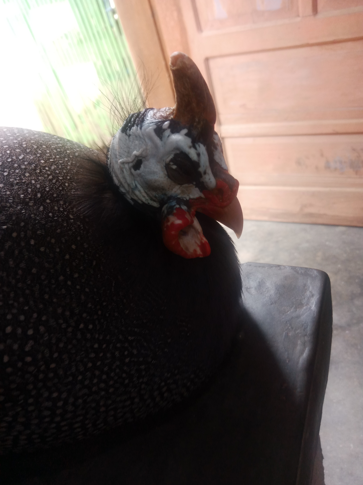

Rohmat
1 jam yang lalu
Refleksi Mata Kuliah PPDP
Topik 3. Asesmen yang mempertimbangkan dan memanfaatkan pengetahuan tentang peserta didik
Pemahaman Baru:
1. Asesmen merupakan penyedia informasi yang holistik.
2. Terdapat panduan dan indikator yang jelas.
3. Menyesuaikan tujuan pembelajaran.
4. Menyesuaikan karakter peserta didik.
5. Asesmen formatif dan sumatif.

 3.921 365 komentar 45 kali dibagikan
3.921 365 komentar 45 kali dibagikan
Topik 3. Asesmen yang mempertimbangkan dan memanfaatkan pengetahuan tentang peserta didik
Pemahaman Baru:
1. Asesmen merupakan penyedia informasi yang holistik.
2. Terdapat panduan dan indikator yang jelas.
3. Menyesuaikan tujuan pembelajaran.
4. Menyesuaikan karakter peserta didik.
5. Asesmen formatif dan sumatif.